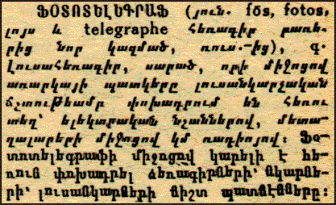

|
THREE POMEGRANATE VIDEOCONFERENCES

PHOTOTELEGRAPH n. Still
image telegraph with which the likeness of an object is
transmitted to a distant location with photographic
accuracy, using electric signals, through wires or by radio.
With the phototelegraph, it is possible to transmit the
exact likenesses of hand-written manuscripts, drawings and
photographs across distances.
[Final entry in the "Malkhassian"
Armenian dictionary - 1st edition, 1955] |
|
On May 9th, 1998 we implemented
our first Internet videoconference between students in Yerevan,
Los Angeles and Marseilles. This was the first ever Internet videoconference
between Armenia and the rest of the world using live video in addition
to voice, a "chat" session in Armenian, and a "whiteboard"
for interactive drawing. This event was followed by two other 3PN videoconference sessions. Several weeks later,
on May 31, the 3PN teacher from one of the participating
schools in Yerevan joined the school’s principal and Justice
Minister of Armenia David Harutyunyan in the second videoconference
event. They connected to 3PN students in Los Angeles
joined by an audience composed of the general public gathered for
the AGBU Manoogian Demirdjian School annual festival. On June 28
it was the turn of the Sourp Hagop Armenian School in Montreal and
the M. & H. Arslanian Djemaran and Yeghishe Manookian schools
in Beirut to hold the third 3PN Internet Videoconference.
During this final videoconference of the session the Montreal and
Beirut nodes were joined by the Project coordinators from Los Angeles
who participated in the multimedia exchanges with students and faculty.
Find out about:
> The
first videoconference - Los Angeles . Marseilles . Yerevan
> The
second videoconference - Los Angeles . Yerevan
> The
third videoconference - Beirut . Montreal
> Videoconferencing
in 3PN 1999
|